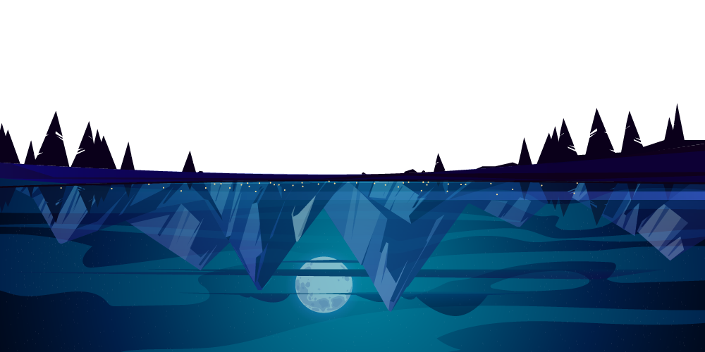

<!DOCTYPE html>

<html lang="de"></html>
<html>
<head>

    <title>Parallax Scrolling Website</title>

    <link rel="stylesheet" href="css/style.css">
    <meta name="viewport" content="width=device-width, initial-scale=1">
    <meta charset="UTF-8">
    <style>
        @media only screen and (max-width: 600px) {
            /* Stile für Bildschirme mit einer Breite von maximal 600px (z. B. iPhones) */
            body {
                font-size: 14px;
            }
            
        }
    </style>
    
</head>
    <body>
        <header>
            <a href="index.html" class="logo">
                <div class="icon-container">
                    
                </div>
            </a>
            <ul>
                <li><a href="index.html">Home</a></li>
                <li><a href="hintergrund.html">Hintergrund</a></li>
                <li><a href="lehrprojekt.html">Lehrprojekt</a></li>
                <li><a href="aboutme.html">About me</a></li>
            </ul>
        </header>
        <section> 
            
            <h2 id="text">Hintergrundinfos</h2>
            
            
            
            
        </section>
        <div class="sec"> 
            <h2>Mobilisierung der jungen Generation in Bezug auf Klima</h2>
            <p> 
                Die treibenden Kräfte hinter diesem raschen Aufstieg sind vielfältig. Die Globalisierung der Kommunikation durch soziale Medien hat den Austausch von Ideen und Informationen enorm beschleunigt. Die Dringlichkeit von Themen wie Klimawandel, Gleichberechtigung und soziale Gerechtigkeit hat eine Generation mobilisiert, die sich zunehmend als global vernetzte Gemeinschaft begreift. Die Fähigkeit, sich schnell zu organisieren und Botschaften effektiv zu verbreiten, hat diesen Bewegungen eine beispiellose Reichweite verliehen.

                Dennoch gibt es auch kritische Stimmen, die den politischen Aktivismus junger Menschen als Trend betrachten. Einige hinterfragen, ob es bei vielen Aktivisten tatsächlich um tiefgreifende Überzeugungen oder eher um das Aufspringen auf einen populären Zug geht.
                <h2><br><br>Mögliche Unterfragen<doloribus class="lorem"></doloribus></h2>
                <ol>
                    <li>Welche Formen des politischen Aktivismus sind bei jungen Erwachsenen in der Schweiz am häufigsten anzutreffen?</li>
                    
                    <li>Welche Motivationen und Anreize führen junge Erwachsene in der Schweiz dazu, sich an politischem Aktivismus zu beteiligen, insbesondere in Bezug auf die Klimaschutz-, LGBTQ+- und Black Lives Matter-Bewegungen?</li>
                    
                    <li>Wie nutzen junge politische Aktivisten soziale Medienplattformen zur Mobilisierung und Verbreitung ihrer politischen Botschaften, und welchen Einfluss hat dies auf die Reichweite ihrer Aktivismusaktionen?</li>
                    
                    <li>Inwiefern beeinflussen diese Formen des politischen Aktivismus die Partizipation junger Erwachsener an Wahlen und politischen Entscheidungen?</li>
                    
                    <li>Wie unterscheiden sich Online-Aktivismus und Offline-Aktivismus in Bezug auf die Meinungsbildung und das politische Engagement junger Erwachsener?</li>
                    
                    <li>Welche Rolle spielen soziale Medien bei der Mobilisierung junger Aktivisten und der Verbreitung politischer Botschaften?</li>
                  </ol>


            </p>
        </div>
        <div class="container1">
            <div class="neon-bar"></div>
            
        </div>
        <script src="js/parallax.js"></script>

    <footer>
        <div class="footer-buttons">
            <button id="scrollTopBtn" onclick="scrollToTop()">Nach oben</button>
            <a href="https://www.instagram.com" target="_blank" class="social-link">
                <button class="social-button">Instagram</button>
            </a>
            <a href="https://www.pinterest.com" target="_blank" class="social-link">
                <button class="social-button">Pinterest</button>
            </a>
        </div>
        <p>&copy; 2023 Giorgia Liuzzo. Alle Rechte vorbehalten.</p>
    </footer>
    
    </body>
</html>